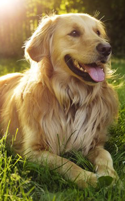
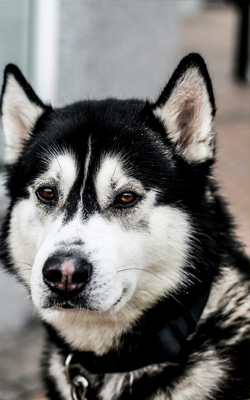

Udomi u par KLIKOVA
Dobrodošli na mjesto gdje možete da samo u par klikova pronađete kućnog ljubimca kakvog ste uvijek željeli




Dobrodošli na mjesto gdje možete da samo u par klikova pronađete kućnog ljubimca kakvog ste uvijek željeli
Ljudi su oduvijek imali potrebu stvarati veze sa životinjama, a odnos ljudi i životinja predstavlja važnu sastavnicu njihovih života od Još oko 12000 godine p.n.e započeo je proces domestifikacije životinja, a kućni ljubimac kakvog danas poznajemo izrazito je važan za čovjeka, te smatran članom obiteljidavnih vremena. Osim toga, on ima niz funkcionalnih uloga, čovjekov je pomagač, prijatelj i suputnik. U posljednje vrijeme sve više raste svijest ljudi o dobrobiti koju kućni ljubimci imaju na njihovo psihičko i fizičko zdravlje te dolazi do sve većeg priznanja njihove terapeutske vrijednosti i razvoja kliničke terapije potpomognute životinjama Ljudi koriste životinje na brojnim područjima svog djelovanja i rada. Kroz godine, i u različitim istraživanjima pokušala se istražiti dobrobit kućnih ljubimaca na djecu i odrasle osobe.Poznato je da se ljudi često znaju predstavljati kao osobe sklonije psima (engl. dog person) ili osobe sklonije mačkama (engl. cat person), sugerirajući time da njihove crte ličnosti odgovaraju ili psima ili mačkama.
Takvo predstavljanje temeljeno je na kulturalnom vjerovanju i stereotipima da vrsta kućnog ljubimca (pas ili mačka) prema kojoj pojedinac ima jači afinitet, govori nešto i o ličnosti tog pojedinca. Neki autori zaključuju da vlasnici kućnih ljubimaca pokazuju manje razine usamljenosti, imaju veće samopouzdanje te su skloni više se baviti tjelesnom aktivnošću. Ukratko, kućni ljubimci veliki su izvor socijalne podrške te fizičke i psihološke dobrobiti za svoje vlasnike. Tako stereotipno vjerovanje pretpostavlja da su vlasnici pasa energičniji, društveniji i skloniji pravilima, a vlasnici mačaka otvorenijih pogleda na život i povučeniji. Ljudi su skloni stvarati tople emotivne i privržene veze sa svojim kućnim ljubimcima (posebice s psima i mačkama koji za privržene veze imaju najviše potencijala) što doprinosi njihovoj općoj dobrobiti, ali i osjećaju sigurnosti .Woodward i Bauer (2007) došli su do zaključka da ljudi koji su manje hostilni i submisivni predstavljaju psa kao svoju idealnu životinju.